Description¶
Introduction¶
This package is used to compute the gamma ray spectra  for light particles, such as, pions, kaon, electrons and muons, in an energy regime where the mass effects are important, i.e. is the MeV energy range. The code has been written in python/cython.
for light particles, such as, pions, kaon, electrons and muons, in an energy regime where the mass effects are important, i.e. is the MeV energy range. The code has been written in python/cython.
Decay spectra¶
In this section, we describe how the radiative decay spectra are computed for the muon, charged pion and neutral pion.
Muon¶
The dominant contribution to the radiative decay of the muon comes from  . The unpolarized differential branching fraction of this decay mode in the muon rest frame can be written as
[1]
. The unpolarized differential branching fraction of this decay mode in the muon rest frame can be written as
[1]
![\dfrac{dB}{dy \ d\cos\theta_{\gamma}^{R}} = \dfrac{1}{y}
\dfrac{\alpha}{72\pi}(1-y)\left[
12\left(3 - 2y(1-y)^2\right)\log\left(\dfrac{1-y}{r}\right)
+ y(1-y)(46 - 55y) - 102\right]](_images/math/34beaaa3dab7d3387e341eddeeb9b46cfa6abfa5.png)
where  ,
,  , (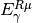 is the energy of the photon in the muon rest frame) and
, (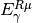 is the energy of the photon in the muon rest frame) and  is the angle the photon makes with respect to some axis in the muon rest frame. In order to obtain the decay spectrum in the laboratory frame, we need to boost the above spectrum. In other words, we need to change variables from the gamma ray energy and angle in the muon rest frame to those in the lab frame. We then integrate over the angle to compute
is the angle the photon makes with respect to some axis in the muon rest frame. In order to obtain the decay spectrum in the laboratory frame, we need to boost the above spectrum. In other words, we need to change variables from the gamma ray energy and angle in the muon rest frame to those in the lab frame. We then integrate over the angle to compute  . The Jacobian for this change of variables is
. The Jacobian for this change of variables is

where the boost parameters are

Integrating over angles yields the gamma ray spectrum in the lab frame:


Charged Pion¶
To compute the gamma ray spectrum from a charged pion, one considers to possible decay modes. These decay modes are  and 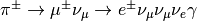. To compute the gamma ray spectrum from the first decay mode, one uses results from [2]. It turns out that the spectrum from this decay mode is roughly a factor of 100 times smaller than the spectrum from the second decay mode. We thus ignore the contributions from .
and 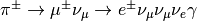. To compute the gamma ray spectrum from the first decay mode, one uses results from [2]. It turns out that the spectrum from this decay mode is roughly a factor of 100 times smaller than the spectrum from the second decay mode. We thus ignore the contributions from .
To compute the γ-ray spectrum from , we first take the muon decay spectra (see section on muon decay spectra) and boost the muon into the pion rest frame use the following:
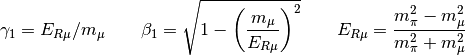
where 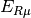 is the energy of the muon in the pion rest frame. The photon spectrum in the charged pion rest frame,  , is obtain by integrating the differential branching ratio times a Jacobian factor
, is obtain by integrating the differential branching ratio times a Jacobian factor  over the
angle the photon makes with the muon. Once this integration is completed, one then boosts into the laboratory frame of reference. The steps are nearly identical to boosting from the muon rest frame to the pion rest frame. The only thing that changes in the boost factor and the Jacobian. In going from the charged pion rest frame to the laboratory frame, the Jacobian and boost factor are
over the
angle the photon makes with the muon. Once this integration is completed, one then boosts into the laboratory frame of reference. The steps are nearly identical to boosting from the muon rest frame to the pion rest frame. The only thing that changes in the boost factor and the Jacobian. In going from the charged pion rest frame to the laboratory frame, the Jacobian and boost factor are
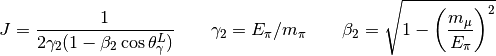
The gamma-ray spectrum in the laboratory frame will thus be
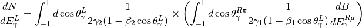
where

and

The limits on the photon energy are given by
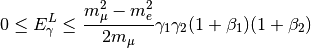

Neutral Pion¶
The dominant decay mode of the neutral pion is 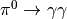. In the laboratory frame, the spectrum is

Final State Radiation¶
Along with computing decay spectra, hazma is able to compute final state radiation spectra from decays of off-shell mediators (scalar, psuedo-scalar, vector or axial-vector.) The relavent diagrams for such processes are
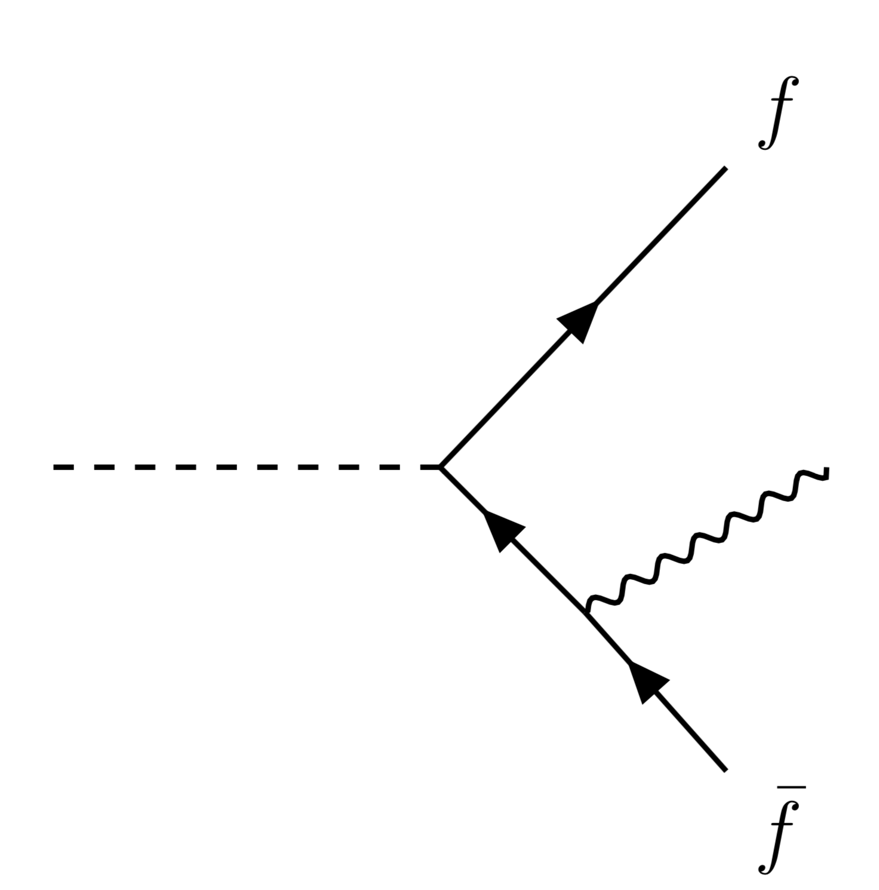
|

|
Computing the matrix elements squared of these diagrams (including diagrams with the photon attached to the other fermion leg) and integrating over all variables except the photon energy yields  . To compute 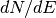, we divide by 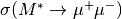.
. To compute 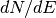, we divide by 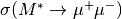.

References¶
| [1] |
|
| [2] |
|